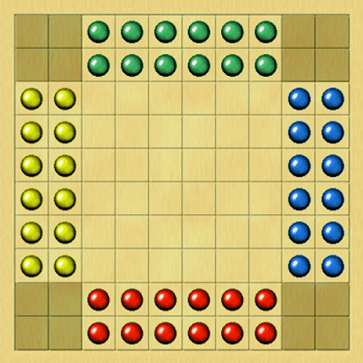

Romette is a race game for two or four players. Stones may move to any adjacent empty square in all eight
directions. They may also jump over a single stone or a continuous row of stones of any colour. A jumping sequence
may continue as long as further jumps are available, or the player may choose to stop early.
• Forced outjump: If a stone from the opposite side (but not the other enemy stones) stands orthogonally or diagonally in
front of a stone that has not yet left its home zone, an outjump is mandatory. (Although the original rules do not
mention an outjump requirement, this addition improves gameplay.)
• Winning condition: A player wins when all of his stones have reached the opposite side of the board.
Romette was registered in 1891 and published by F. H. Ayres, London, 1892.
Reference
Romette. The
Games Board.
• You can download my free Romette program here (updated 2026-04-02), but you must own the software Zillions
of Games to be able to run it (I recommend the download version).
• See also Ternion.
© M. Winther, 2026 April